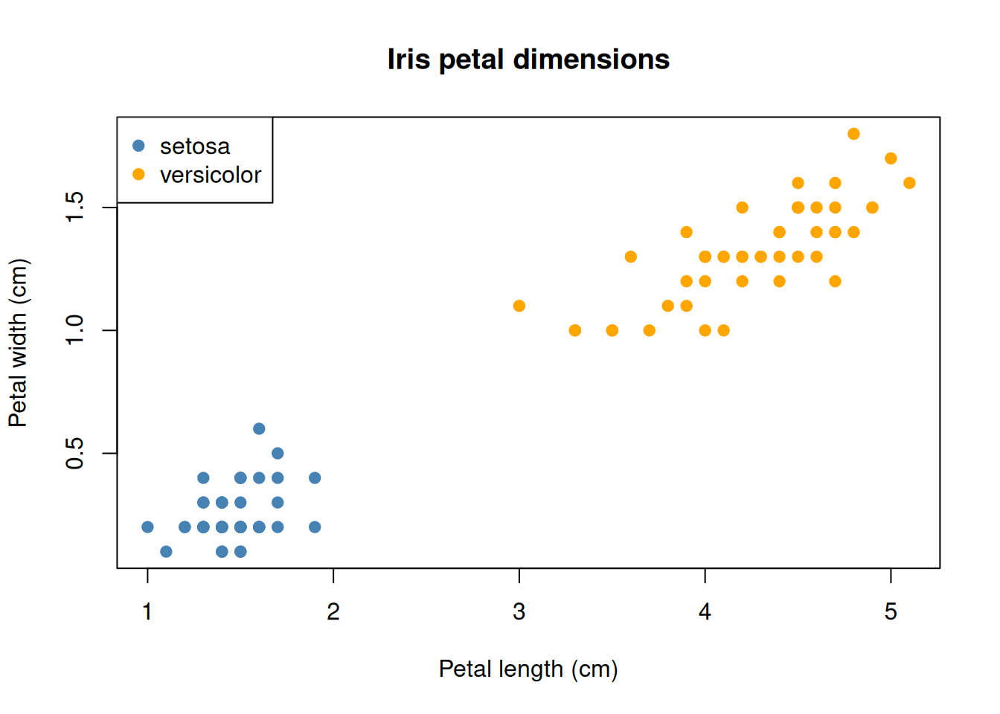

[1] 5[1] 2.5[1] 82026-11-26
R is a programming language designed for working with data. You can use it to import, clean, analyse, and visualise data, and to report your results, all by writing code.
A few things worth knowing:
R and RStudio are two separate things, and it helps to know the differences. R is the language and engine that runs your code while RStudio is a workspace that makes R easier to use.
R is like as a car’s engine while RStudio is the car’s dashboard and controls.
In this module, you will be typing into RStudio, but R does the work.
You may already analyse data in a spreadsheet. Spreadsheets are fine for storing and eyeballing small tables, but R offers several advantages for research.
Every step of your analysis is written down. Anyone, including you in six months, can rerun your script and get the same result. With point-and-click tools, the steps live only in your memory.
Code records exactly what you did to your data: what you removed, what you transformed, and which model you ran. Reviewers and collaborators can check it, and mistakes are easier to spot and fix.
Once you have written code for one dataset, you can run it on a hundred. Repetitive tasks that take hours by hand take seconds, and rerunning an analysis after you add new data costs nothing.
R can handle almost any analysis or plot you can imagine. You are not limited to the options someone else put in a menu.
Familiarity with R is valued across academia, conservation, government, and industry, and the skills you build transfer to other languages (e.g. Python).
Like most skills in life, R has a learning curve. Expect to make typos, see error messages, and feel slow at first. This is normal for everyone, but the payoff comes quickly as the basics become second nature.
At its simplest, R is a very powerful calculator. Type an expression into the console (or run it from a script) and R returns the result.
In R, we use <- to store a value in an object. Once stored, you can reuse the object by name.
age_ma and Age_Ma are different objects, so choose short, descriptive names without spaces.
A vector is a collection of values of the same type. You can create one with c().
[1] "Pliocene" "Miocene" [1] FALSE FALSE TRUE TRUEVectors can store more than numbers.
Anything after # is a comment. R ignores comments, so use them to explain your code to your future self.
A function is a reusable set of instructions that takes an input, does something with it, and returns a result. You have already used one c() when creating a vector.
To use (or “call”) a function, type its name followed by parentheses. The values you put inside the parentheses are its arguments, which are the inputs the function works on.
[1] 4.60517 [1] 1 2 3 4 5 6 7 8 9 10[1] 5.5[1] 5.5[1] 3.02765[1] 1[1] 10[1] 55 0% 25% 50% 75% 100%
1.00 3.25 5.50 7.75 10.00 sqrt is the function and 16 is the argument. As you can probably guess, sqrt() computes the square root of its argument. A function can take several arguments, separated by commas. You can supply them by position or by name.
Here are a couple more examples:
Every object has a class, which tells R how to treat it. Check it with class().
[1] "numeric"[1] "integer"[1] "character"[1] "logical"[1] "factor"| Class | Example | Used for |
|---|---|---|
numeric |
23.5 |
Measurements, ages |
integer |
5L |
Counts |
character |
"Acropora" |
Names, labels |
logical |
TRUE |
Yes/no conditions |
factor |
"reef" |
Categories with fixed levels |
Mixing classes in one vector forces R to convert everything to the most flexible class.
genus age_ka n_specimens
1 Acropora 23.0 12
2 Porites 15.9 30
3 Pocillopora 11.6 8
4 Caryophyllia 5.3 5
5 Balanophyllia 2.6 3[1] "data.frame"A data frame is a table where each column is a vector and all columns have the same length. A list can hold objects of different types and sizes.
genus age_ka n_specimens
1 Acropora 23.0 12
2 Porites 15.9 30
3 Pocillopora 11.6 8
4 Caryophyllia 5.3 5
5 Balanophyllia 2.6 3[1] "data.frame"[1] "Acropora" "Porites" "Pocillopora" "Caryophyllia"
[5] "Balanophyllia"[1] "Acropora" "Porites" "Pocillopora" "Caryophyllia"
[5] "Balanophyllia"[1] "Acropora" "Porites" "Pocillopora" "Caryophyllia"
[5] "Balanophyllia"You can use $ and [[ ]] to extract a whole column as a vector.
genus age_ka n_specimens
1 Acropora 23.0 12
2 Porites 15.9 30
3 Pocillopora 11.6 8
4 Caryophyllia 5.3 5
5 Balanophyllia 2.6 3[1] "data.frame"[1] "Acropora" "Porites" "Pocillopora" "Caryophyllia"
[5] "Balanophyllia"[1] "Acropora" "Porites" "Pocillopora" "Caryophyllia"
[5] "Balanophyllia"[1] "Acropora" "Porites" "Pocillopora" "Caryophyllia"
[5] "Balanophyllia" genus
1 Acropora
2 Porites
3 Pocillopora
4 Caryophyllia
5 Balanophyllia genus
1 Acropora
2 Porites
3 Pocillopora
4 Caryophyllia
5 Balanophyllia[1] "Acropora" "Porites" "Pocillopora" "Caryophyllia"
[5] "Balanophyllia"[1] "Acropora" "Porites" "Pocillopora" "Caryophyllia"
[5] "Balanophyllia" genus age_ka
1 Acropora 23.0
2 Porites 15.9
3 Pocillopora 11.6
4 Caryophyllia 5.3
5 Balanophyllia 2.6Single square brackets [ ] also select columns, but what you get back depends on how you use them. With one index, you get a data frame. With a comma, you are using [rows, columns], and leaving the rows blank returns every row.
Use single square brackets [rows, columns] with the corals data frame.
genus column, first by column name and then by column position.genus and age_ka columns.Solution
[1] "Porites"[1] "Porites" genus age_ka n_specimens
2 Porites 15.9 30 genus age_ka
1 Acropora 23.0
2 Porites 15.9
3 Pocillopora 11.6$institution
[1] "Natural History Museum"
$collection
[1] "Fossil Cnidaria"
$genera
NULL
$data
genus age_ka n_specimens
1 Acropora 23.0 12
2 Porites 15.9 30
3 Pocillopora 11.6 8
4 Caryophyllia 5.3 5
5 Balanophyllia 2.6 3[1] "list"[1] 4Create a list with list(). Each element can be a different class and length, and can even be a whole data frame.
$institution
[1] "Natural History Museum"
$collection
[1] "Fossil Cnidaria"
$genera
NULL
$data
genus age_ka n_specimens
1 Acropora 23.0 12
2 Porites 15.9 30
3 Pocillopora 11.6 8
4 Caryophyllia 5.3 5
5 Balanophyllia 2.6 3[1] "list"[1] 4NULLNULL genus age_ka n_specimens
1 Acropora 23.0 12
2 Porites 15.9 30
3 Pocillopora 11.6 8
4 Caryophyllia 5.3 5
5 Balanophyllia 2.6 3[1] 23.0 15.9 11.6 5.3 2.6Use $ or double square brackets [[ ]] to extract an element by name or position.
$institution
[1] "Natural History Museum"
$collection
[1] "Fossil Cnidaria"
$genera
NULL
$data
genus age_ka n_specimens
1 Acropora 23.0 12
2 Porites 15.9 30
3 Pocillopora 11.6 8
4 Caryophyllia 5.3 5
5 Balanophyllia 2.6 3[1] "list"[1] 4NULLNULL genus age_ka n_specimens
1 Acropora 23.0 12
2 Porites 15.9 30
3 Pocillopora 11.6 8
4 Caryophyllia 5.3 5
5 Balanophyllia 2.6 3[1] 23.0 15.9 11.6 5.3 2.6List of 4
$ institution: chr "Natural History Museum"
$ collection : chr "Fossil Cnidaria"
$ genera : NULL
$ data :'data.frame': 5 obs. of 3 variables:
..$ genus : chr [1:5] "Acropora" "Porites" "Pocillopora" "Caryophyllia" ...
..$ age_ka : num [1:5] 23 15.9 11.6 5.3 2.6
..$ n_specimens: int [1:5] 12 30 8 5 3Use str() for a compact overview of any list.
A data frame is really just a list in which every element is a vector of the same length. Check with is.list(corals).
Add a new element called observer to coral_specimens, holding your name. Then extract the genus column of the data frame stored inside the list.
R represents missing data as NA. Most summary functions return NA if any value is missing, unless you tell them otherwise.
R comes with many built-in example datasets. You can list them with data():
Sepal.Length Sepal.Width Petal.Length Petal.Width Species
1 5.1 3.5 1.4 0.2 setosa
2 4.9 3.0 1.4 0.2 setosa
3 4.7 3.2 1.3 0.2 setosa
4 4.6 3.1 1.5 0.2 setosa
5 5.0 3.6 1.4 0.2 setosa
6 5.4 3.9 1.7 0.4 setosaAnd also load them by name:
In most cases, you are going to want to use your own dataset. These can come in various formats, but one of the most common formats is a comma-separated values (.csv) file. In R, we can load this file using read.csv():
read.csv() looks for files relative to your working directory. If you are working in an RStudio Project (more on this later), this is the project folder. Check it with getwd().
Similarly, we can also save files via R. Here, we pass the object we want to save (reefs) and the file name to write to:
If a file with the same name already exists, R will overwrite it without warning. Use a new file name (e.g. reefs_clean.csv) to avoid replacing your original data.
Similar functions exist for other file formats. The table below lists some of the most common ones using base R. However, many other options exist when extending base R with packages (e.g. .xlsx, .xls formats).
| File type | Read | Write |
|---|---|---|
Comma-separated (.csv) |
read.csv() |
write.csv() |
Semicolon-separated (.csv, common in Europe) |
read.csv2() |
write.csv2() |
Tab-separated (.tsv, .txt) |
read.delim() |
write.table(sep = "\t") |
| Any delimited text file | read.table() |
write.table() |
R data file (.rds) |
readRDS() |
saveRDS() |
R workspace (.RData, .rda) |
load() |
save() |
Always inspect your data straight after importing it.
r_number name formation system series
1 1 Tilkideligi Tepe Triassic Upper Triassic
2 2 Hydra Pantokrator Limestone Triassic Upper Triassic
3 3 Shiraho, W-Pacific Neogene Holocene
4 4 Aksu-Terziler area Triassic Upper Triassic
5 5 Adnet, Salzburg Triassic Upper Triassic
6 6 Rotelwand Triassic Upper Triassic
interval biota_main biota_sec lng lat country
1 lower Norian Calcisponges Stromatoporoids 30.3833 37.0333 Turkey
2 upper Carnian Corals Calcisponges 23.6333 37.3833 Greece
3 Recent Corals Algae 124.2500 24.3333 Pacific
4 Tuvalian Calcisponges Stromatoporoids 31.0333 37.8000 Turkey
5 upper Rhaetian Corals Calcisponges 13.1667 47.7000 Austria
6 Rhaetian Corals Calcisponges 13.1833 47.7000 Austria
authors
1 Riedel, P.
2 Schafer, P., Senowbari-Daryan, B.
3 Kayanne, H., Suzuki, A. & Saito, H.
4 Riedel, P.
5 Schafer, P.
6 Schafer, P.
title
1 Riffbiotope im Karn und Nor (Obertrias) der Tethys: Entwicklung, Einschnitte und Diversitatsmuster. -
2 The Upper Triassic Pantokrator Limestone of Hydra (Greece): An example of a prograding reef complex. -
3 Diurnal changes in the partial pressure of carbon dioxide in coral reef water. -
4 Riffbiotope im Karn und Nor (Obertrias) der Tethys: Entwicklung, Einschnitte und Diversitatsmuster. -
5 Fazielle Entwicklung und palokologische Zonierung zweier obertriadischer Riffstrukturen in den Nordlichen Kalkalpen (Oberrhat"-Riff-Kalke, Salzburg)
6 Fazielle Entwicklung und palokologische Zonierung zweier obertriadischer Riffstrukturen in den Nordlichen Kalkalpen (Oberrhat"-Riff-Kalke, Salzburg)
year
1 1990
2 1982
3 1995
4 1990
5 1979
6 1979 r_number name formation
4358 4373 core XK-1, Xisha carbonate platform on Shidao Island Sanya
4359 4374 core XK-1, Xisha carbonate platform on Shidao Island Sanya
4360 4375 Jebel Serdj-Bargou Lower Serdj
4361 4376 Cruz Higueruelas
4362 4377 Jaulin Higueruelas
4363 4378 Anjiazhuang near Feicheng, Shandong Zhangxia
system series interval biota_main biota_sec
4358 Neogene Miocene Burdigalian Corals
4359 Neogene Miocene Aquitanian Corals Corals
4360 Cretaceous Lower Cretaceous upper Aptian Corals Rudists
4361 Jurassic Upper Jurassic upper Kimmeridgian Corals Foraminifera
4362 Jurassic Upper Jurassic upper Kimmeridgian Corals Algae
4363 Cambrian Middle Cambrian Amgan Microbes Microbes
lng lat country
4358 112.3472 16.8458 China
4359 112.3472 16.8458 China
4360 9.5666 36.0833 Tunisia
4361 -0.8621 41.3359 Spain
4362 -0.9908 41.4559 Spain
4363 116.7700 35.9900 China
authors
4358 Yibing Li, Xinyu Liu, Weiwei Chen, Liang Yi
4359 Yibing Li, Xinyu Liu, Weiwei Chen, Liang Yi
4360 Najeh Ben Chaabane, Fares Khemiri, Mohamed Soussi, Ilef Belhaj Taher
4361 Marcos Aurell, Alfonso Melendez Hevia
4362 Marcos Aurell, Alfonso Melendez Hevia
4363 Mei, M.-X., Riaz, M., Zhang, Z.-W., Meng, Q.-F., Hu, Y.
title
4358 Magnetic Properties and Initiation of Biogenic Reefs in Xisha Islands, South China Sea, at the Oligo-Miocene Boundary
4359 Magnetic Properties and Initiation of Biogenic Reefs in Xisha Islands, South China Sea, at the Oligo-Miocene Boundary
4360 Late Aptian carbonate platform evolution and controls (south Tethys, Tunisia): response to sea-level oscillations, palaeo-environmental changes and climate
4361 Las bioconstrucciones de corales y sus facies asociadas durante el Malm en la Cordillera Iberica Central (provincia de Zaragoza)
4362 Las bioconstrucciones de corales y sus facies asociadas durante el Malm en la Cordillera Iberica Central (provincia de Zaragoza)
4363 Diversified calcimicrobes in dendrolites of the Zhangxia Formation, Miaolingian Series (Middle Cambrian) of the North China craton
year
4358 2021
4359 2021
4360 2021
4361 1987
4362 1987
4363 2021[1] 4363 14 [1] "r_number" "name" "formation" "system" "series"
[6] "interval" "biota_main" "biota_sec" "lng" "lat"
[11] "country" "authors" "title" "year" 'data.frame': 4363 obs. of 14 variables:
$ r_number : int 1 2 3 4 5 6 7 8 9 10 ...
$ name : chr "Tilkideligi Tepe" "Hydra" "Shiraho, W-Pacific" "Aksu-Terziler area" ...
$ formation : chr "" "Pantokrator Limestone" "" "" ...
$ system : chr "Triassic" "Triassic" "Neogene" "Triassic" ...
$ series : chr "Upper Triassic" "Upper Triassic" "Holocene" "Upper Triassic" ...
$ interval : chr "lower Norian" "upper Carnian" "Recent" "Tuvalian" ...
$ biota_main: chr "Calcisponges" "Corals" "Corals" "Calcisponges" ...
$ biota_sec : chr "Stromatoporoids" "Calcisponges" "Algae" "Stromatoporoids" ...
$ lng : num 30.4 23.6 124.2 31 13.2 ...
$ lat : num 37 37.4 24.3 37.8 47.7 ...
$ country : chr "Turkey" "Greece" "Pacific" "Turkey" ...
$ authors : chr "Riedel, P." "Schafer, P., Senowbari-Daryan, B." "Kayanne, H., Suzuki, A. & Saito, H." "Riedel, P." ...
$ title : chr "Riffbiotope im Karn und Nor (Obertrias) der Tethys: Entwicklung, Einschnitte und Diversitatsmuster. -" "The Upper Triassic Pantokrator Limestone of Hydra (Greece): An example of a prograding reef complex. -" "Diurnal changes in the partial pressure of carbon dioxide in coral reef water. -" "Riffbiotope im Karn und Nor (Obertrias) der Tethys: Entwicklung, Einschnitte und Diversitatsmuster. -" ...
$ year : int 1990 1982 1995 1990 1979 1979 1989 1989 1986 1986 ... r_number name formation system
Min. : 1 Length :4363 Length :4363 Length :4363
1st Qu.:1092 N.unique :4050 N.unique :1248 N.unique : 17
Median :2185 N.blank : 0 N.blank :2342 N.blank : 0
Mean :2186 Min.nchar: 3 Min.nchar: 0 Min.nchar: 7
3rd Qu.:3276 Max.nchar: 88 Max.nchar: 49 Max.nchar: 21
Max. :4378 NAs : 1
series interval biota_main biota_sec
Length :4363 Length :4363 Length :4363 Length :4363
N.unique : 69 N.unique : 782 N.unique : 17 N.unique : 17
N.blank : 6 N.blank : 0 N.blank : 271 N.blank : 316
Min.nchar: 0 Min.nchar: 5 Min.nchar: 0 Min.nchar: 0
Max.nchar: 23 Max.nchar: 29 Max.nchar: 27 Max.nchar: 27
lng lat country authors
Min. :-179.55 Min. :-82.00 Length :4363 Length :4363
1st Qu.: -43.75 1st Qu.: 28.38 N.unique : 145 N.unique :2103
Median : 19.03 Median : 39.93 N.blank : 0 N.blank : 0
Mean : 17.65 Mean : 36.03 Min.nchar: 4 Min.nchar: 6
3rd Qu.: 73.57 3rd Qu.: 49.83 Max.nchar: 22 Max.nchar: 213
Max. : 177.83 Max. : 82.50
title year
Length :4363 Min. :1871
N.unique :2342 1st Qu.:1981
N.blank : 11 Median :1989
Min.nchar: 0 Mean :1988
Max.nchar: 246 3rd Qu.:1996
Max. :2021
NAs :48 In RStudio, View(reefs) opens the data in a spreadsheet-style viewer.
Load the built-in iris dataset and answer the following using the functions above.
Sepal.Length?Exercise 3: Solution
1. How many rows and columns does it have?
The dataset has 150 rows and 5 columns.
2. What are the column names, and what class is each column?
[1] "Sepal.Length" "Sepal.Width" "Petal.Length" "Petal.Width" "Species" 'data.frame': 150 obs. of 5 variables:
$ Sepal.Length: num 5.1 4.9 4.7 4.6 5 5.4 4.6 5 4.4 4.9 ...
$ Sepal.Width : num 3.5 3 3.2 3.1 3.6 3.9 3.4 3.4 2.9 3.1 ...
$ Petal.Length: num 1.4 1.4 1.3 1.5 1.4 1.7 1.4 1.5 1.4 1.5 ...
$ Petal.Width : num 0.2 0.2 0.2 0.2 0.2 0.4 0.3 0.2 0.2 0.1 ...
$ Species : Factor w/ 3 levels "setosa","versicolor",..: 1 1 1 1 1 1 1 1 1 1 ...str(iris) returns the column names, classes and example values in one go.
3. What is the mean Sepal.Length?
4. Does the dataset contain any missing values?
[1] FALSE[1] 0Sepal.Length Sepal.Width Petal.Length Petal.Width Species
0 0 0 0 0 No. anyNA() returns FALSE and the total number of NA values is 0.
When working with datasets, you’ll often need to wrangle the data to prepare them for analysis. For instance, you might want to add a column.
Or you might want to subset your data. One option is to use the subset() function. For example, let’s look at the Neogene and Quaternary reefs.
You can also use brackets for indexing as introduced above. Let’s look at just the coral reefs.
Maybe you’re interested in a certain modern-day latitudinal range. Consider: why might this approach be problematic when analyzing fossil reefs?
r_number name formation system series interval
4133 4146 Paluma Shoals, Halifax Bay Unknown Quaternary Holocene Recent
biota_main biota_sec lng lat country
4133 Corals Corals 146.3 -19.06 Australia
authors
4133 J. A. Johnson, C. T. Perry, S. G. Smithers, K. M. Morgan, N. Santodomingo, K. G. Johnson
title
4133 Palaeoecological records of coral community development on a turbid, nearshore reef complex: baselines for assessing ecological change
year is_coral
4133 2017 TRUEWe could also subset this data frame further to just pull out the Holocene occurrences.
r_number name formation system series interval
4133 4146 Paluma Shoals, Halifax Bay Unknown Quaternary Holocene Recent
biota_main biota_sec lng lat country
4133 Corals Corals 146.3 -19.06 Australia
authors
4133 J. A. Johnson, C. T. Perry, S. G. Smithers, K. M. Morgan, N. Santodomingo, K. G. Johnson
title
4133 Palaeoecological records of coral community development on a turbid, nearshore reef complex: baselines for assessing ecological change
year is_coral
4133 2017 TRUEYou might want to sort your data. Note that you can also do this when directly viewing the dataset in RStudio, i.e. with View().
r_number name formation system series interval
4133 4146 Paluma Shoals, Halifax Bay Unknown Quaternary Holocene Recent
biota_main biota_sec lng lat country
4133 Corals Corals 146.3 -19.06 Australia
authors
4133 J. A. Johnson, C. T. Perry, S. G. Smithers, K. M. Morgan, N. Santodomingo, K. G. Johnson
title
4133 Palaeoecological records of coral community development on a turbid, nearshore reef complex: baselines for assessing ecological change
year is_coral
4133 2017 TRUEYou might want to combine datasets. rbind() combines rows. cbind() combines columns. merge() will join dataframes. Let’s recombine two of our subsets from above using rbind() as an example.
r_number name formation system series interval
4133 4146 Paluma Shoals, Halifax Bay Unknown Quaternary Holocene Recent
biota_main biota_sec lng lat country
4133 Corals Corals 146.3 -19.06 Australia
authors
4133 J. A. Johnson, C. T. Perry, S. G. Smithers, K. M. Morgan, N. Santodomingo, K. G. Johnson
title
4133 Palaeoecological records of coral community development on a turbid, nearshore reef complex: baselines for assessing ecological change
year is_coral
4133 2017 TRUE
Cambrian Carboniferous Carboniferous-Permian
230 310 3
Cretaceous Cryogenian Devonian
486 5 604
Ediacaran Jurassic Neogene
16 542 671
Ordovician Paleogene Permian
258 266 311
Proterozoic Quaternary Silurian
7 33 306
Silurian-Devonian Triassic
5 310 And you may want to tabulate the data. Let’s look at how much data there are across the different intervals in the full reef dataset.
All of these operations can be done in base R as well as using tidyverse syntax. For additional practice manipulating data frames using dplyr, see the tidyverse module. For additional practice cleaning and preparing data for analysis, see the Data cleaning and Data exploration modules.
Finally, you may want to plot your data. We’ll cover a basic example here in base R. For a more in-depth treatment of plotting, see the ggplot2 and Data visualisation modules.
Let’s first make a histogram of the latitudes present in the dataset.
Let’s also practice making a scatterplot. Here, I’m going to generate a toy dataset using rnorm()so you can see how to do that.
Now it’s your turn. Use the iris dataset that you’ve already loaded to do the following:
Exercise 4: Solution
1. Subset the data to look at just the setosa and versicolor species.
2. Plot the relationship between petal length and width. Color the points by species.
[1] "setosa" "versicolor"# Custom colors
cols <- c("setosa" = "steelblue", "versicolor" = "orange")
# Plot width~length
plot(iris_subset$Petal.Width~iris_subset$Petal.Length,
col = cols[iris$Species],
pch = 19,
xlab = "Petal length (cm)",
ylab = "Petal width (cm)",
main = "Iris petal dimensions")
legend("topleft",
legend = levels(iris_subset$Species),
col = cols[levels(iris_subset$Species)],
pch = 19)
3. Add a column that calculates the ratio of petal length to width.
4. Make a boxplot comparing the petal ratios between the two species. Plot the mean ratio values as points on top of the boxplot. How do the petal dimensions differ between the two species?
# Plot
boxplot(Petal.Ratio ~ Species, data = iris_subset,
col = cols[levels(iris_subset$Species)],
xlab = "Species",
ylab = "Petal length / width ratio",
main = "Petal ratio by species")
# Calculate mean ratio for each species
setosa_mean <- mean(iris_subset$Petal.Ratio[iris_subset$Species=="setosa"])
versicolor_mean <- mean(iris_subset$Petal.Ratio[iris_subset$Species=="versicolor"])
# Add means to the plot
mean_ratio <- c(setosa_mean,versicolor_mean)
points(1:2, mean_ratio, pch = 18, cex = 2, col = "black")
We see clear separation between the two species in terms of their petal dimensions. versicolor has larger petals than setosa. The petal shape also differs between species: versicolor petals have a lower aspect ratio than setosa, meaning that they are rounder.
If/else statements allow you to make conditional statements. In other words, R will do something only under certain conditions.
[1] "x is greater than 3"[1] "oh no!"[1] 0 1 1 1 1 0Loops are useful for repeated operations.
This same task can be accomplished with the apply function. Here, we use sapply() since we’re dealing with a vector.
Here’s another example using apply() to find the minimum sepal length and width in the iris dataset.
Today, we’ll just dip our toes into the world of writing your own functions. To dive in deeper, check out the Writing functions module.
Let’s write a basic function together to understand its structure. Palaeoverse team members Lewis and Erin are both avid runners but are having trouble comparing how far they ran. Let’s help them convert between miles and kilometers.
[1] 9.656064# Let's make this function more interchangeable using an if/else statement
convert_distance <- function(distance, units = c("mi", "km")) {
units <- match.arg(units) # Controls the input
if (units == "mi") {
distance * 1.609344 # miles to km
} else {
distance / 1.609344 # km to miles
}
}
# Test it out
convert_distance(18,"km")[1] 11.18468Practise writing a function of your own! You can either be creative or attempt the following example:
ifelse() may come in handy
Exercise 5: Solution
1. Write a function that can place values (e.g., size measurements) into three groups (small, medium, large) based on user-specified threshold values.
Everything we’ve done so far in this tutorial has relied on functions that are available in base R. However, there’s a big world of functions out there that can do everything from tidying up data to making beautiful plots to running statistical and other discipline-specific analyses.
You can tap into this world through packages. An R package bundles together code, data, documentation, and tests to extend the R programming language. You can install packages in the Output panel under the Packages tab (click “Install” and then type and select the package name). You can also script the installation, which can be helpful if you need to install several packages at at time. Note that you only need to install a package once; after that, it lives in your library.
You have access to the tens of thousands of packages available on CRAN. Additionally, you can download packages directly from GitHub (i.e., development versions or packages that are not available on CRAN) using the devtools package.
Prior to using any of the functions in a package, you’ll need to load it. Then you’re good to go!
To access the documentation, type ? and the package name.
Are you feeling powerful yet?
TO DO